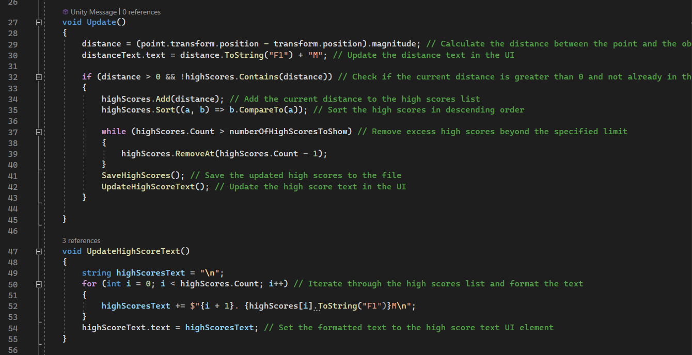
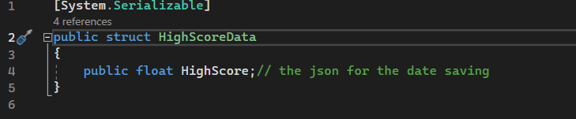

HampterBall
Je speelt als een hamster die zat is van gevangenschap, en wil daarom graag uit zijn kooi ontsnappen. Elke keer nadat je ontsnapt heeft je eigenaar dit in de gaten en versterkt de kooi om dit te voorkomen. Het is jouw doel als deze anarchistische hamster om te blijven ontsnappen tot succes
Mechanics:
 - Besturing met de Gyroscoop: De hampterbal beweegt in de richting waarin de
speler zijn telefoon kantelt. Bijvoorbeeld, als de speler zijn telefoon naar voren
kantelt, rolt de hampterbal vooruit. Kantelen naar links of rechts stuurt de bal in de
respectievelijke richting.
- Level generatie: Wanneer de speler naar voren beweegt, wordt het volgende deel
van het level gegenereerd. Dit kan variëren van obstakels, platforms tot nieuwe
omgevingen.
- Obstakels en uitdagingen: Het level is bezaaid met obstakels en uitdagingen die de
speler moet vermijden of overwinnen. Dit kan variëren van eenvoudige obstakels
zoals kuilen en hindernissen.
- Score en Prestaties: De speler verdient punten op basis van hoever hij in het level
komt
- Besturing met de Gyroscoop: De hampterbal beweegt in de richting waarin de
speler zijn telefoon kantelt. Bijvoorbeeld, als de speler zijn telefoon naar voren
kantelt, rolt de hampterbal vooruit. Kantelen naar links of rechts stuurt de bal in de
respectievelijke richting.
- Level generatie: Wanneer de speler naar voren beweegt, wordt het volgende deel
van het level gegenereerd. Dit kan variëren van obstakels, platforms tot nieuwe
omgevingen.
- Obstakels en uitdagingen: Het level is bezaaid met obstakels en uitdagingen die de
speler moet vermijden of overwinnen. Dit kan variëren van eenvoudige obstakels
zoals kuilen en hindernissen.
- Score en Prestaties: De speler verdient punten op basis van hoever hij in het level
komt
Scrum Master:
Als Scrum Master van ons groepje zorgde ik ervoor dat we regelmatig terugblikten op ons werk en keken hoe we konden verbeteren. Ik hield de planning in de gaten en stelde samen met het team realistische doelen voor elke werkperiode. Een speciaal moment was toen we allemaal samenkwamen om onze plannen voor het project te bespreken. We maakten samen een gedetailleerde agenda en het gaf ons een gevoel van teamwerk en gedeelde verantwoordelijkheid. Naast de planning werkten we samen aan regels en afspraken, zoals het Game Design Document en de Code of Conduct. Dit hielp niet alleen om duidelijkheid te scheppen, maar ook om een positieve werkomgeving te bevorderen. Kortom, als Scrum Master ging mijn rol verder dan alleen het managen van processen; het draaide om het bouwen van een sterk en gemotiveerd team.
HighscoreScript:
 Dit script, genaamd HighscoreScript, houdt bij hoe ver dat object is van een specifiek punt in de game. Telkens wanneer de afstand groter is dan nul en nog niet eerder opgeslagen in de lijst met hoogste scores, wordt deze afstand toegevoegd aan de lijst.
hoogste scores worden opgeslagen in een JSON-bestand genaamd "highScore.json". Wanneer het spel start, laadt het script automatisch de hoogste score en werkt de UI-tekst bij. Terwijl het spel loopt, wordt de lijst met hoogste scores bijgewerkt en beperkt tot een opgegeven aantal. Telkens wanneer er een wijziging is in de hoogste scores, wordt de lijst opgeslagen in het JSON-bestand en wordt de UI-tekst opnieuw bijgewerkt om de meest recente hoogste scores weer te geven.
 Dus kort gezegd, het script volgt de afstand van een bewegend object tot een punt en houdt een lijst met hoogste scores bij die tijdens het spelen worden bijgewerkt en opgeslagen.